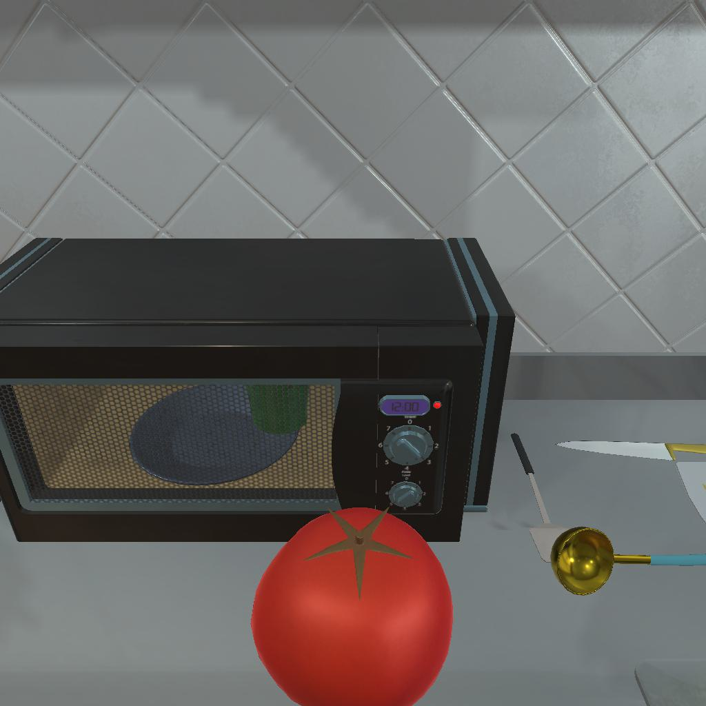

---------------------------------------------------------task: 12---------------------------------------------------------
--------------------------------------------------------------------------------------------------------------------------------------------------------------------
--------------------------------------------------------------------------------------------------------------------------------------------------------------------
Step:--------------------------------------------------------------------------15-------------------------------------------------------------------------------
----------------------------------------
VLM Prompt:
Image1:
**Instruction**
1. Analyze the provided image to identify all visible household objects, focusing on those relevant to the task description "clean some tomato and put it in countertop."
2. Use the analysis of the image and the task hint "The agent must find an object of the desired type, pick it up, go to a sink or a basin, clean the object with a sink or basin, and then find the correct location to place it and put it down there. The agent does not need to use soap bottle or faucet to clean the object, and the agent just needs to do action that is "clean the object with the sink or sink basin"." to answer the question: what is the most reasonable action in the choices for the task description "clean some tomato and put it in countertop"?
4. Decide and write the answer using the template: The answer is: (i): , where i is the real number. If there is no desired object in the image, search every place based on **Initial Observation** to find the object. And if no one is exactly correct, choose a similar answer.
**Initial Observation**
You are in the middle of a room. Looking quickly around you, you can see cabinet (1-6), microwave (1), countertop (1-2), coffeemachine (1), toaster (1), sink (1), sinkbasin (1), fridge (1)
**Answer Choices**
(1): go to cabinet 1
(2): go to cabinet 2
(3): go to cabinet 3
(4): go to microwave 1
(5): go to cabinet 4
(6): go to cabinet 5
(7): go to cabinet 6
(8): go to countertop 1
(9): go to coffeemachine 1
(10): go to toaster 1
(11): go to sink 1
(12): go to sinkbasin 1
(13): go to fridge 1
(14): put tomato 1 in/on countertop 2
(15): examine tomato 1
(16): examine countertop 2
**Answer**
Let's think step by step by following the instructions.
----------------------------------------
----------------------------------------
Original Response:
First, we need to identify all visible household objects relevant to the task description "clean some tomato and put it in countertop." In the provided image, we can see a tomato on the countertop, a microwave, and some utensils. The task hint indicates that the agent must find the object (tomato), clean it using a sink or basin, and then place it on the correct location on the countertop.
Based on the **Initial Observation**, we know there is only one sink (1) and one sinkbasin (1) available, and the tomato is already visible in the image on the countertop.
The most logical steps for the task would be:
- Pick up the tomato from the countertop.
- Clean the tomato at the sink or sinkbasin.
- Place the cleaned tomato back on the countertop.
Since the tomato is already visible in the image, we do not need to search for it in cabinets or other appliances. Therefore, the first step would be to go to the sink or sinkbasin to clean the tomato.
The answer is: (11): go to sink 1.
----------------------------------------
----------------------------------------
>>> Refine Original VLM Response and Get Pure Action: go to sink 1
----------------------------------------
-----------------------------------------------------------------
Running time: 16.09872007369995 seconds
Total Money: 3.7430799999999995
-----------------------------------------------------------------
-----------------------------------------------------------------
Text Observation:You arrive at loc 11. On the sink 1, you see a faucet 1, and a plate 1.
-----------------------------------------------------------------
UNSUCCEED